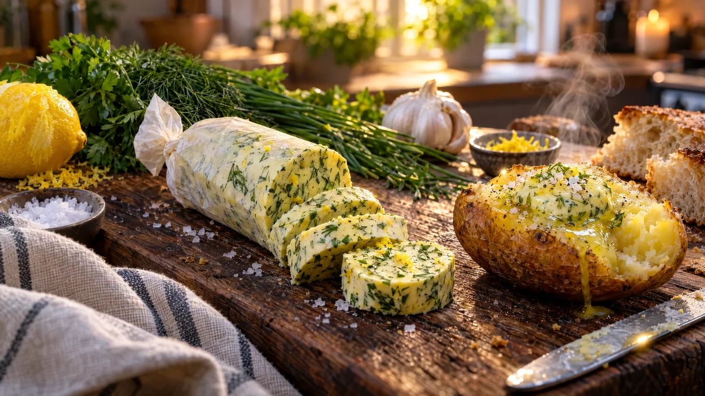

RESTFEST · RECEPTSåser & röror
Rullat örtsmör med citron och vitlök
Ett paket smör och de örter som håller på att vissna i kylen. Allt rörs ihop med citronskal och vitlök, rullas till en tjock rulle i bakplåtspapper och kyls. Skivorna ser ut som grönsprängd marmor och smälter till glänsande pölar över stekt fisk, kött, potatis och varmt bröd.
- Förberedelse
- 15 min + 2 tim i kylen
- Tillagning
- 0 min
- Portioner
- 1 rulle (ca 20 skivor)
- Nivå
- Nybörjare
 Det här behöver du
Det här behöver du
Tryck på + vid det du behöver köpa.
Gör så här
- Ta fram smöret i god tid. Det ska vara mjukt men inte smält.
- Hacka örterna fint. De mjuka stjälkarna går också bra, men plocka bort grova stjälkar från timjan och rosmarin.
- Rör ihop smör, örter, vitlök, citronskal, citronsaft, flingsalt, peppar och chili med en slickepott, tills allt är jämnt fördelat.
- Lägg smöret i en avlång hög på ett bakplåtspapper. Vik pappret över smöret och tryck en linjal eller en stekspade mot pappret längs smörets underkant, så formas en jämn rulle, ca 4 cm tjock.
- Vrid ändarna som på en karamell och kyl rullen i minst 2 timmar, tills den är fast.
- Skär skivor, ca 1 cm, med en kniv som doppats i varmt vatten.
Dekoration och servering
- Lägg en skiva på en het biff, stekt fisk eller en bakad potatis precis före servering, så att den smälter i en glänsande pöl.
- Servera rullen på ett träbräde till varmt bröd, med ändarna av pappret kvar för en rustik look.
- Rullen håller i ca 1 vecka i kylen och i 3 månader i frysen. Skiva den innan du fryser, så kan du ta en skiva i taget.
- Byt citron och dill mot chili och koriander, eller mot rosmarin och vitlök, efter vad som finns i kylen.
Mått och ugnstemperaturer
Måtten är svenska (dl, msk, tsk, krm). Ugnstemperaturerna gäller vanlig ugn med över- och undervärme; med varmluft, sänk med 20 grader.